Yüz mimarisi, bilimle başlar.
Bazen yapılması gerekeni değil, yapılmaması gerekeni bilmek en doğru yaklaşımdır. Cilt analiziyle başlayan, kişiye özel medikal estetik planlaması.
- 2005Trakya Tıp Fakültesi
- 15+ yılmedikal estetik
- 18uygulama alanı
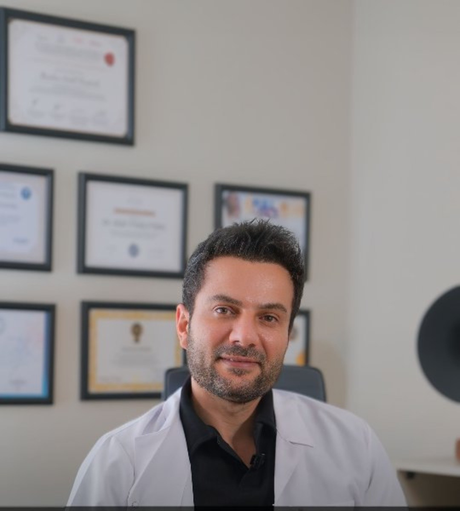
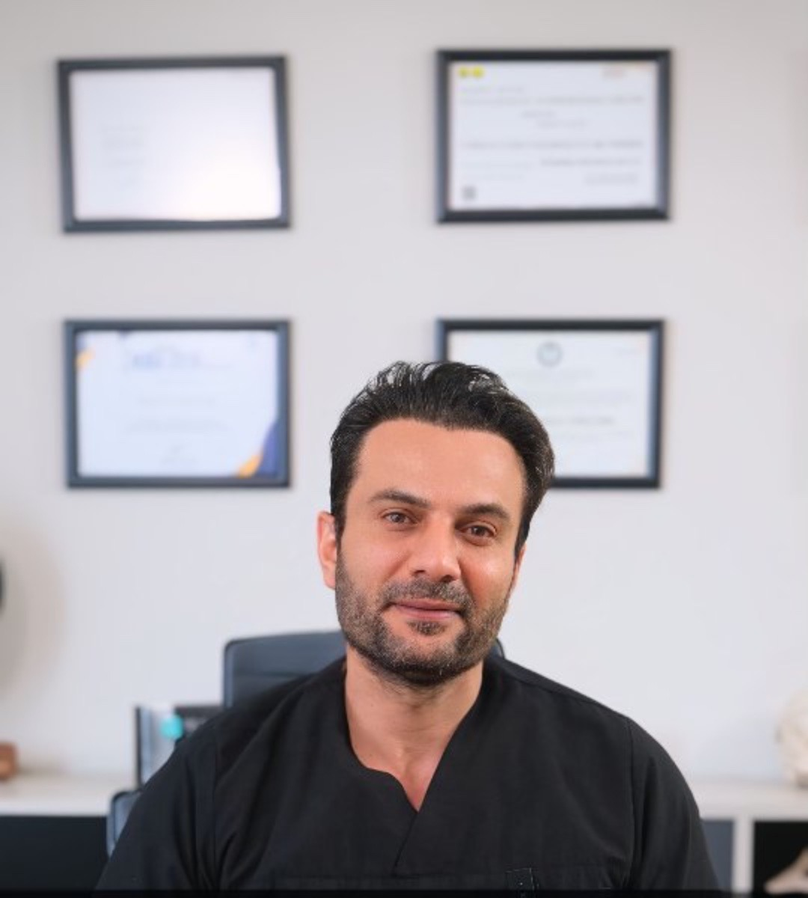

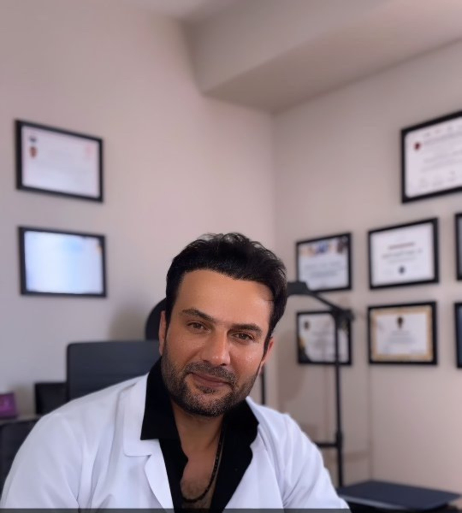
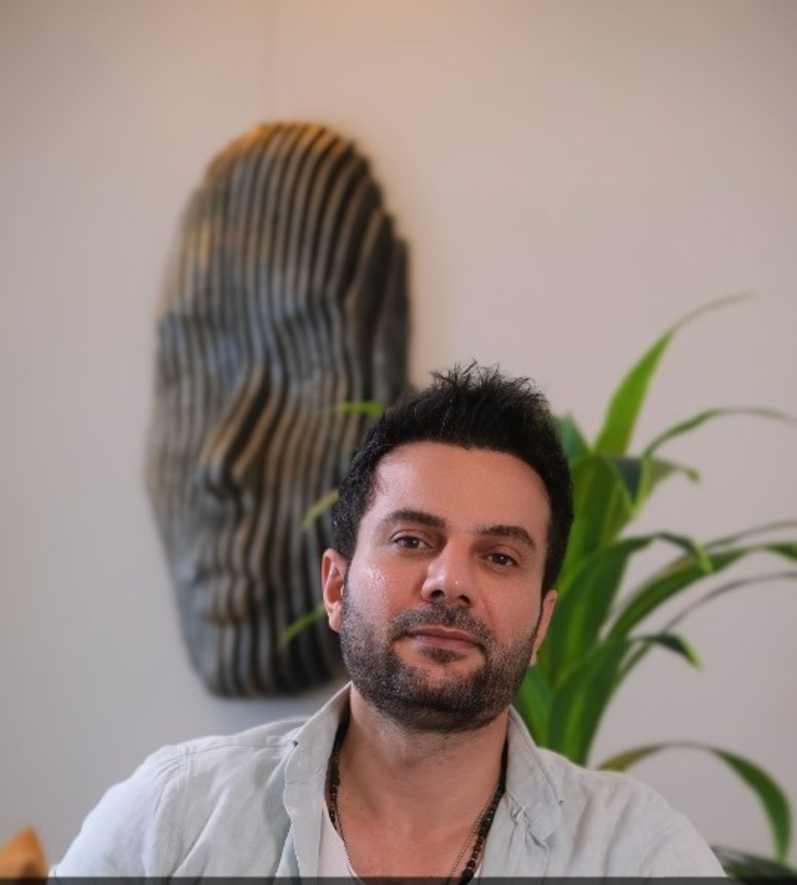
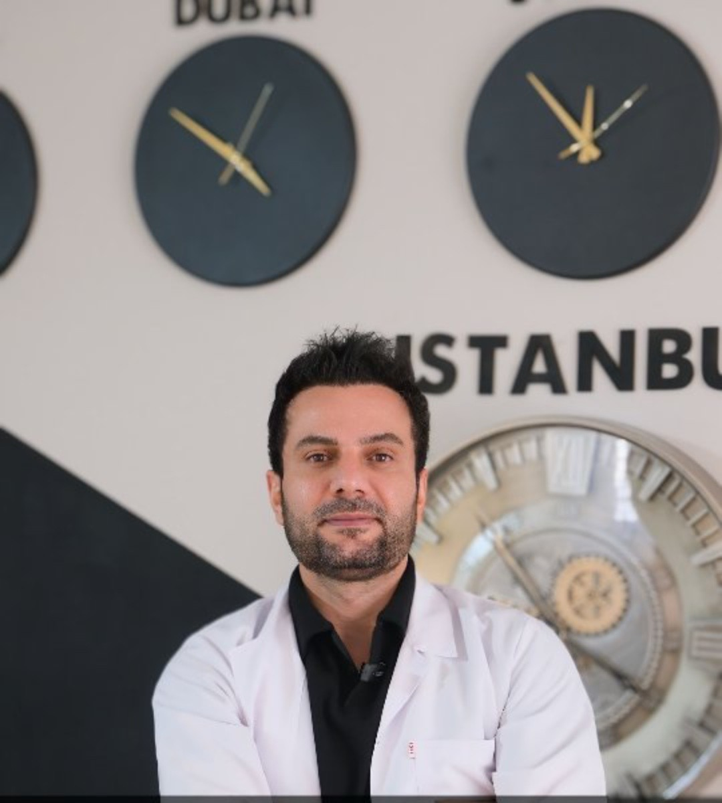
Bilimsel gelişmeleri yakından takip ederek
1980 yılında doğdum, 2005 yılında Trakya Tıp Fakültesi’nden mezun oldum. Medikal estetik, anti-aging ve rejeneratif tıp alanlarında 15 yılı aşkın süredir çalışıyorum.
- Medikal Estetik sertifikası
- Mezoterapi sertifikası
- Ozon Tedavisi sertifikası
Cildinizi tanıyın, doğru bakımı keşfedin
Cilt analizi; nem oranı, gözenek yapısı, ton eşitsizlikleri ve yaşlanma belirtilerini ölçerek size özel bir bakım planının temelini oluşturur.
Hangi bölge, hangi uygulama?
Bir noktaya dokunun; o bölgeye yönelik uygulamaları görün. Size en uygun plan, muayene sonrasında belirlenir.
Medikal estetikten longevity’ye
Enjeksiyon Uygulamaları
Dolgu, botoks ve mezoterapiyle yüz mimarisine ölçülü dokunuşlar.
- Dolgu Uygulamaları
- Botoks Uygulamaları
- Mezoterapi Uygulamaları
- Sıvı Yüz Germe
- İp Askı Uygulamaları
Rejeneratif & Longevity
Eksozom, kök hücre, PRP ve gençlik aşısıyla cildin kendini yenileme sürecine destek.
- Eksozom Uygulamaları
- Kök Hücre Uygulamaları
- P.R.P. Uygulamaları
- Gençlik Aşısı Uygulamaları
Cilt Bakımı & Yenileme
Cilt analizi, medikal cilt bakımı, carbon peeling ve altın iğne.
- Cilt Analiz Uygulamaları
- Medikal Cilt Bakım Uygulamaları
- Carbon Peeling Uygulamaları
- Altın İğne Uygulamaları
Cihaz & Lazer
Hi-Fu, M-Slim, G5, lazer ve bölgesel incelme uygulamaları.
- Hi-Fu ve M-Slim Tedavileri
- G5 Uygulamaları
- Lazer Tedavi Uygulamaları
- Lazer Epilasyon Uygulamaları
- Bölgesel İncelme Uygulamaları
Bazen yapılması gerekeni değil, yapılmaması gerekeni bilmek en doğru yaklaşımdır.Dr. Halil Tunçtürk
Analizden takibe
Cilt analizi
Cildinizin nem, gözenek, ton ve yaşlanma belirtileri değerlendirilir.
Muayene
Yüz yapınız, sağlık geçmişiniz ve beklentileriniz birlikte ele alınır.
Kişiye özel plan
İhtiyacınıza uygun uygulama ya da uygulama kombinasyonu belirlenir.
Uygulama ve takip
Uygulama hekim tarafından yapılır; sonrasında dikkat edilecekler paylaşılır.
Kliniğimizden görüntüler
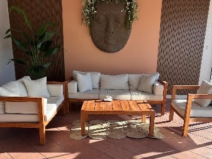
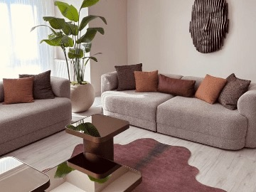
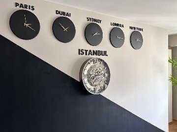
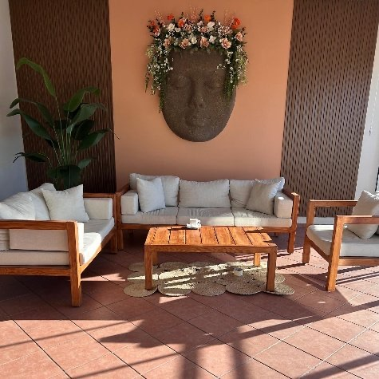
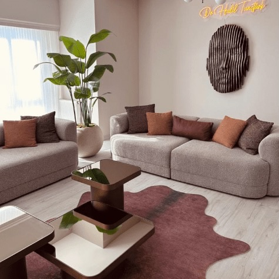
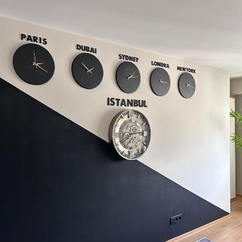
Muayene için randevu oluşturun
Size en uygun uygulamayı muayene ve cilt analizi sonrasında, yüz yapınız ve beklentileriniz doğrultusunda birlikte planlayalım.